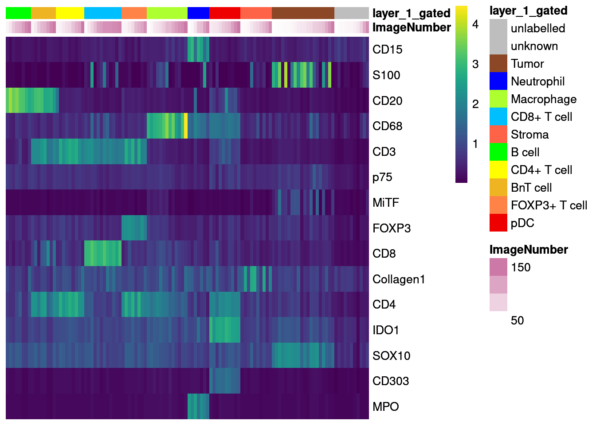
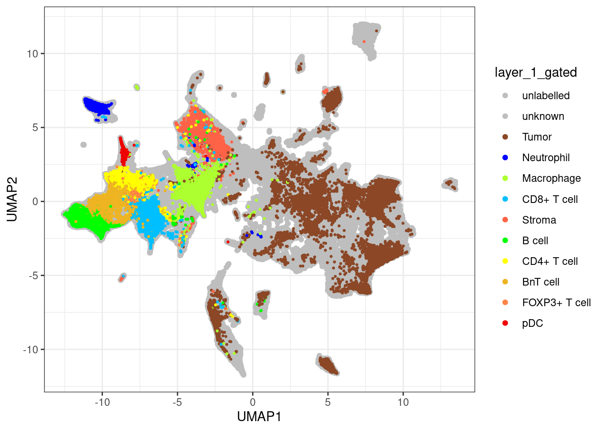
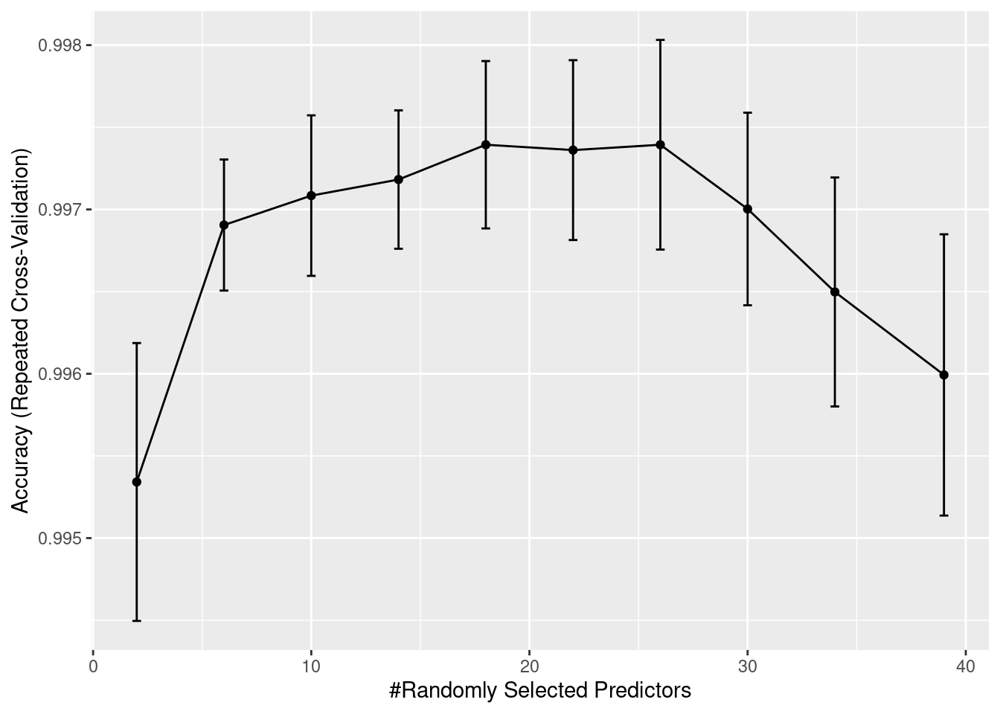
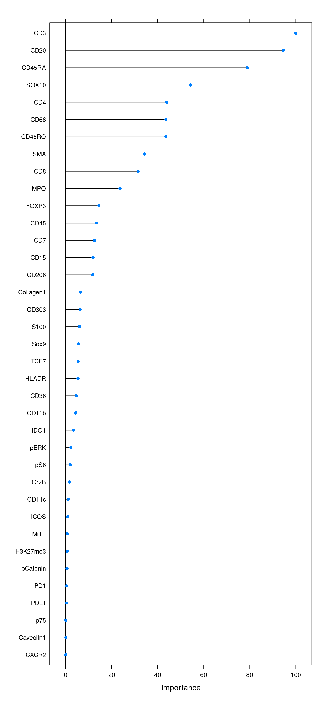
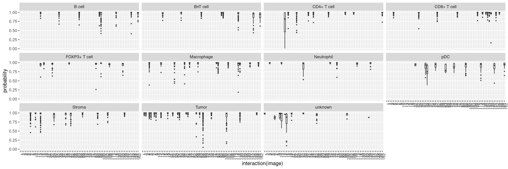
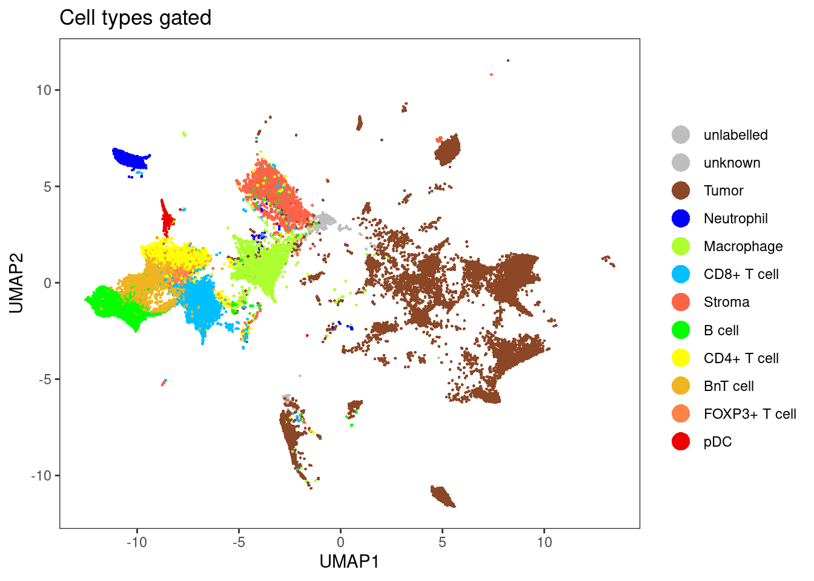
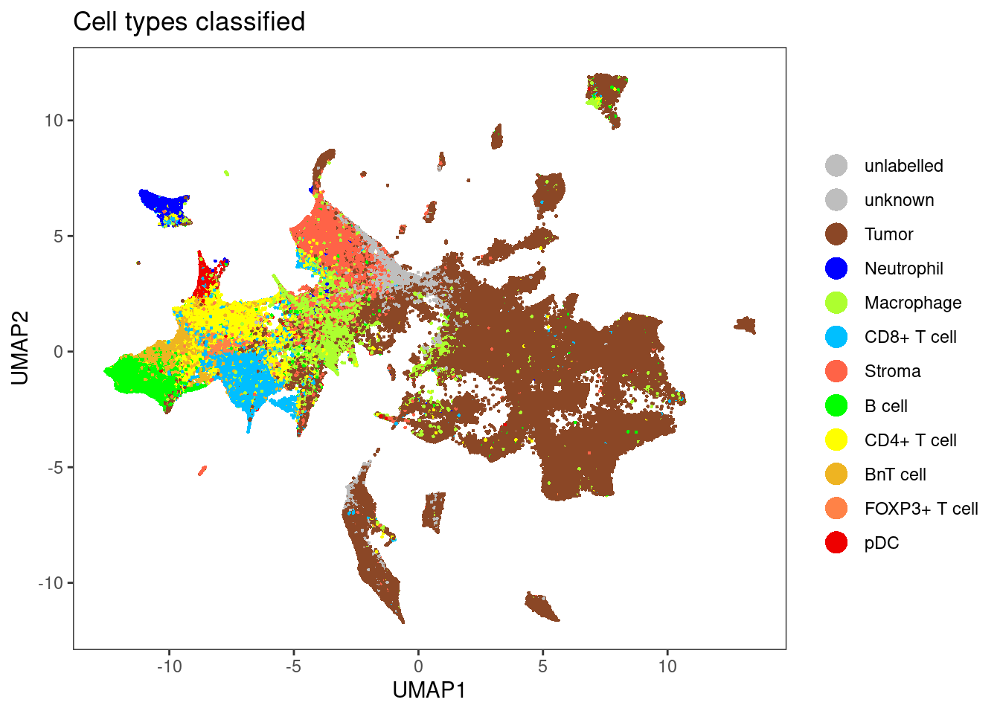
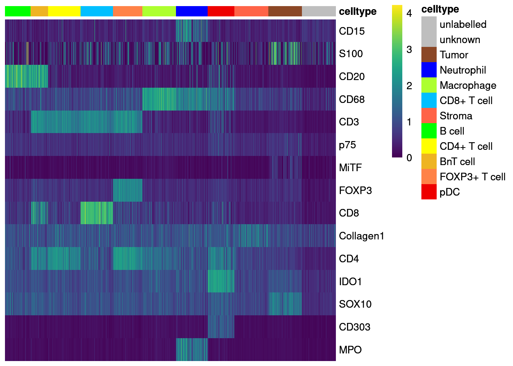
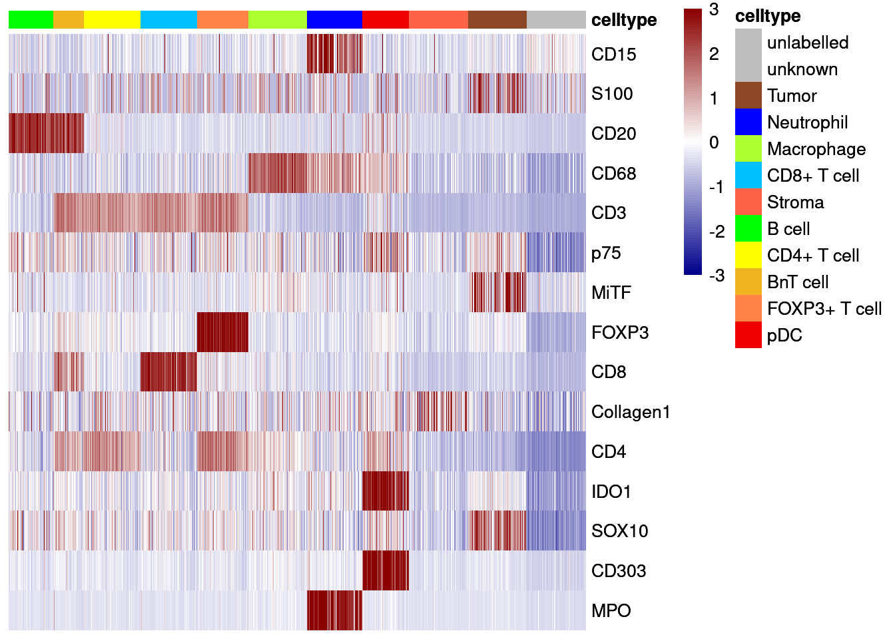

04_1_Protein_celltype_classification
toobiwankenobi
2020-08-24
Last updated: 2022-02-22
Checks: 7 0
Knit directory: MelanomaIMC/
This reproducible R Markdown analysis was created with workflowr (version 1.7.0). The Checks tab describes the reproducibility checks that were applied when the results were created. The Past versions tab lists the development history.
Great! Since the R Markdown file has been committed to the Git repository, you know the exact version of the code that produced these results.
Great job! The global environment was empty. Objects defined in the global environment can affect the analysis in your R Markdown file in unknown ways. For reproduciblity it’s best to always run the code in an empty environment.
The command set.seed(20200728) was run prior to running the code in the R Markdown file. Setting a seed ensures that any results that rely on randomness, e.g. subsampling or permutations, are reproducible.
Great job! Recording the operating system, R version, and package versions is critical for reproducibility.
Nice! There were no cached chunks for this analysis, so you can be confident that you successfully produced the results during this run.
Great job! Using relative paths to the files within your workflowr project makes it easier to run your code on other machines.
Great! You are using Git for version control. Tracking code development and connecting the code version to the results is critical for reproducibility.
The results in this page were generated with repository version d246c15. See the Past versions tab to see a history of the changes made to the R Markdown and HTML files.
Note that you need to be careful to ensure that all relevant files for the analysis have been committed to Git prior to generating the results (you can use wflow_publish or wflow_git_commit). workflowr only checks the R Markdown file, but you know if there are other scripts or data files that it depends on. Below is the status of the Git repository when the results were generated:
Ignored files:
Ignored: .DS_Store
Ignored: .Rproj.user/
Ignored: Table_S4.csv
Ignored: code/.DS_Store
Ignored: code/._.DS_Store
Ignored: data/.DS_Store
Ignored: data/._.DS_Store
Ignored: data/data_for_analysis/
Ignored: data/full_data/
Unstaged changes:
Modified: .gitignore
Modified: analysis/Supp-Figure_10.rmd
Modified: analysis/_site.yml
Deleted: analysis/license.Rmd
Note that any generated files, e.g. HTML, png, CSS, etc., are not included in this status report because it is ok for generated content to have uncommitted changes.
These are the previous versions of the repository in which changes were made to the R Markdown (analysis/04_1_Protein_celltype_classification.rmd) and HTML (docs/04_1_Protein_celltype_classification.html) files. If you’ve configured a remote Git repository (see ?wflow_git_remote), click on the hyperlinks in the table below to view the files as they were in that past version.
| File | Version | Author | Date | Message |
|---|---|---|---|---|
| html | 73aa800 | toobiwankenobi | 2022-02-22 | add .html for static website |
| Rmd | f9a3a83 | toobiwankenobi | 2022-02-08 | clean repo for release |
| Rmd | 3da15db | toobiwankenobi | 2021-11-24 | changes for revision |
| html | 4109ff1 | toobiwankenobi | 2021-07-07 | delete html files and adapt gitignore |
| Rmd | 3203891 | toobiwankenobi | 2021-02-19 | change celltype names |
| html | 3203891 | toobiwankenobi | 2021-02-19 | change celltype names |
| Rmd | ee1595d | toobiwankenobi | 2021-02-12 | clean repo and adapt files |
| html | ee1595d | toobiwankenobi | 2021-02-12 | clean repo and adapt files |
| html | 3f5af3f | toobiwankenobi | 2021-02-09 | add .html files |
| Rmd | f9bb33a | toobiwankenobi | 2021-02-04 | new Figure 5 and minor changes in figure order |
| Rmd | 2ac1833 | toobiwankenobi | 2021-01-08 | changes to Figures |
| Rmd | 9442cb9 | toobiwankenobi | 2020-12-22 | add all new files |
| Rmd | d8819f2 | toobiwankenobi | 2020-10-08 | read new data (nuclei expansion) and adapt scripts |
| Rmd | 2c11d5c | toobiwankenobi | 2020-08-05 | add new scripts |
Introduction
This script performs cell-type classification based on manually labelled cells. We will create increasing complexity for cell type labelling.
Preparations
knitr::opts_chunk$set(echo = TRUE, message= FALSE)
knitr::opts_knit$set(root.dir = rprojroot::find_rstudio_root_file())Read in data
First, we will read in the SingleCellExperiment object and load all libraries.
library(caret)
library(scater)
library(tidyverse)
library(dittoSeq)
library(viridis)
library(doParallel)
library(ggpubr)
library(randomForest)Load data
sce <- readRDS("data/data_for_analysis/sce_protein.rds")
# load all subsetted sce object from hierarchichal gating and combine the
label.files <- list.files("data/data_for_analysis/protein/celltype_classifier/", full.names = TRUE)
# Read in SCE objects
cur_sces <- lapply(label.files, readRDS)
# Merge SCE objects
# Due to relabelling, we now need to match the colData entries and remove rowData
cur_entries <- names(colData(cur_sces[[1]]))
cur_sces <- lapply(cur_sces, function(x){
colData(x) <- colData(x)[,cur_entries]
rowData(x) <- NA
return(x)
})
labelled_sce <- do.call("cbind", cur_sces)
# add rowData
rowData(labelled_sce) <- rowData(sce)Rename Celltypes
unique(labelled_sce$cytomapper_CellLabel) [1] "Bcell" "BnTcell" "Macrophage" "Neutrophil" "pDC"
[6] "Stroma" "Tcytotoxic" "Thelper" "Tregulatory" "Tumor"
[11] "unknown" labelled_sce[,labelled_sce$cytomapper_CellLabel == "Bcell"]$cytomapper_CellLabel <- "B cell"
labelled_sce[,labelled_sce$cytomapper_CellLabel == "BnTcell"]$cytomapper_CellLabel <- "BnT cell"
labelled_sce[,labelled_sce$cytomapper_CellLabel == "Tcytotoxic"]$cytomapper_CellLabel <- "CD8+ T cell"
labelled_sce[,labelled_sce$cytomapper_CellLabel == "Thelper"]$cytomapper_CellLabel <- "CD4+ T cell"
labelled_sce[,labelled_sce$cytomapper_CellLabel == "Tregulatory"]$cytomapper_CellLabel <- "FOXP3+ T cell"Duplicates
# how many duplicates do we have?
ncol(labelled_sce[,duplicated(labelled_sce$cellID) == T]) / ncol(labelled_sce[,duplicated(labelled_sce$cellID) == F]) * 100[1] 0.06727787# remove duplicates (more than 1 label per cellID)
unique_labels <- labelled_sce[,duplicated(labelled_sce$cellID) == F]Add labels to SCE object
unique(unique_labels$cytomapper_CellLabel) [1] "B cell" "BnT cell" "Macrophage" "Neutrophil"
[5] "pDC" "Stroma" "CD8+ T cell" "CD4+ T cell"
[9] "FOXP3+ T cell" "Tumor" "unknown" label_vector <- rep("unlabelled", ncol(sce))
names(label_vector) <- colnames(sce)
label_vector[colnames(unique_labels)] <- unique_labels$cytomapper_CellLabel
# add to sce
colData(sce)$layer_1_gated <- label_vectorCreate colour vector
Here, we will define a colour vector for the cell-types contained in layer 1.
layer1_colours <- vector(length = length(unique(label_vector)))
names(layer1_colours) <- unique(label_vector)
layer1_colours["BnT cell"] <- "goldenrod2"
layer1_colours["B cell"] <- "green1"
layer1_colours["Macrophage"] <- "greenyellow"
layer1_colours["Neutrophil"] <- "blue1"
layer1_colours["CD4+ T cell"] <- "yellow"
layer1_colours["FOXP3+ T cell"] <- "sienna1"
layer1_colours["pDC"] <- "red2"
layer1_colours["Stroma"] <- "tomato"
layer1_colours["CD8+ T cell"] <- "deepskyblue"
layer1_colours["Tumor"] <- "sienna4"
layer1_colours["unknown"] <- "gray"
layer1_colours["unlabelled"] <- "gray"
# Save in SCE object
metadata(sce)$colour_vectors$layer_1 <- layer1_coloursQuality control
In the next step, we will check the quality of the labels by:
- checking how many cells contain multiple labels (see chunk 2)
- how many cells of how many images are labeled
- how balanced the classes are
- if the selected cells actually express the markers that they are supposed to express
Next, we will check how many cells and how many images are labelled.
# 2. How many cells of how many images are labelled
# Percent cells labelled
as_tibble(colData(sce)) %>%
summarise(labelled_cells = sum(layer_1_gated != "unlabelled")/n()) * 100 labelled_cells
1 8.863518# Percent images labelled
as_tibble(colData(sce)) %>%
group_by(ImageNumber) %>%
summarise(labelled_cells = sum(layer_1_gated != "unlabelled")) %>%
ungroup() %>%
summarise(labelled_images = sum(labelled_cells != 0)/n()) * 100 labelled_images
1 42.51497# Percent of cells labelled per image
as_tibble(colData(sce)) %>%
group_by(ImageNumber) %>%
summarise(labelled_cells = sum(layer_1_gated != "unlabelled")/n(),
number_cells = n()) %>%
as.data.frame() ImageNumber labelled_cells number_cells
1 1 0.005673409 4054
2 2 0.693469672 8606
3 3 0.387682493 8151
4 4 0.080830616 5827
5 5 0.277162359 8937
6 6 0.646044158 4348
7 7 0.083700441 8172
8 8 0.656653747 6192
9 9 0.540270346 7102
10 10 0.145543745 1223
11 11 0.000000000 8051
12 12 0.023703041 4472
13 13 0.384896023 8223
14 14 0.240790656 6678
15 15 0.018567639 4524
16 16 0.000000000 150
17 17 0.000000000 4282
18 18 0.354059609 9730
19 19 0.460003837 5213
20 20 0.000000000 6404
21 21 0.014819588 3104
22 22 0.000000000 6044
23 23 0.000000000 5163
24 24 0.000000000 3676
25 25 0.000000000 7588
26 26 0.010978520 2095
27 27 0.263806287 2354
28 28 0.000000000 2860
29 29 0.130766749 9299
30 30 0.022828220 9681
31 31 0.450201497 5211
32 32 0.856838744 7516
33 33 0.154418539 14111
34 34 0.000000000 7979
35 35 0.000000000 6390
36 36 0.015293537 4054
37 37 0.081128189 6311
38 38 0.000000000 7972
39 39 0.000000000 5838
40 40 0.000000000 3583
41 41 0.000000000 6265
42 42 0.411458333 4032
43 43 0.000000000 12718
44 44 0.443698950 3428
45 45 0.039334577 6432
46 46 0.000000000 1725
47 47 0.119944212 10038
48 48 0.000000000 13418
49 49 0.000000000 6955
50 50 0.000000000 11348
51 51 0.000000000 397
52 52 0.089435014 7894
53 53 0.000000000 4225
54 54 0.000000000 1554
55 55 0.000000000 3822
56 56 0.016384018 3479
57 57 0.000000000 1124
58 58 0.145661811 3158
59 59 0.023677079 7011
60 60 0.000000000 7333
61 61 0.000000000 6449
62 62 0.000000000 623
63 63 0.163449163 1554
64 64 0.415044172 11659
65 65 0.000000000 1884
66 66 0.000000000 9010
67 67 0.000000000 5410
68 68 0.647529706 7995
69 69 0.035565177 6467
70 70 0.000000000 4677
71 71 0.000000000 498
72 72 0.117969495 4196
73 73 0.224781119 5254
74 74 0.000000000 936
75 75 0.005124162 7611
76 76 0.451695050 6283
77 77 0.073209073 4453
78 78 0.086204082 6125
79 79 0.000000000 2316
80 80 0.000000000 5077
81 81 0.000000000 7437
82 82 0.036069442 5933
83 83 0.044240130 9245
84 84 0.000000000 7433
85 85 0.014137264 8276
86 86 0.122383857 10655
87 87 0.000000000 4625
88 88 0.000000000 8381
89 89 0.000000000 8795
90 90 0.000000000 6276
91 91 0.000000000 5592
92 92 0.000000000 4971
93 93 0.000000000 7830
94 94 0.000000000 11871
95 95 0.223364019 14013
96 96 0.000000000 7064
97 97 0.000000000 5448
98 98 0.000000000 1583
99 99 0.000000000 5865
100 100 0.003671409 2179
101 101 0.090753425 4088
102 102 0.055220641 4147
103 103 0.000000000 8063
104 104 0.103303303 6660
105 105 0.000000000 9135
106 106 0.000000000 4230
107 107 0.000000000 5316
108 108 0.020666920 7887
109 109 0.000000000 8182
110 110 0.028205128 8580
111 111 0.000000000 994
112 112 0.000000000 7230
113 113 0.022005295 6044
114 114 0.008444537 9592
115 115 0.000000000 5326
116 116 0.000000000 5164
117 117 0.000000000 2520
118 118 0.188493151 7300
119 119 0.000000000 9371
120 120 0.000000000 7119
121 121 0.000000000 3693
122 122 0.000000000 10368
123 123 0.000000000 7635
124 124 0.000000000 5999
125 125 0.000000000 6573
126 126 0.000000000 7288
127 127 0.000000000 6411
128 128 0.000000000 6508
129 129 0.000000000 7698
130 130 0.631642879 6586
131 131 0.000000000 6072
132 132 0.064892136 5748
133 133 0.085784818 4861
134 134 0.058528428 6578
135 135 0.000000000 7615
136 136 0.000000000 5898
137 137 0.000000000 5788
138 138 0.000000000 4631
139 139 0.032942993 7771
140 140 0.022099448 4525
141 141 0.027125540 11797
142 142 0.061248528 5943
143 143 0.000000000 6024
144 144 0.000000000 5584
145 145 0.098246355 9466
146 146 0.000000000 8089
147 147 0.000000000 7454
148 148 0.021767297 3859
149 149 0.000000000 6605
150 150 0.000000000 6910
151 151 0.000000000 5720
152 152 0.000000000 3895
153 153 0.000000000 6053
154 154 0.000000000 3958
155 155 0.000000000 3183
156 156 0.000000000 6238
157 157 0.000000000 2151
158 158 0.126542400 3809
159 159 0.000000000 5162
160 160 0.000000000 844
161 161 0.120879121 4914
162 162 0.082316344 8358
163 163 0.000000000 969
164 164 0.000000000 2304
165 165 0.000000000 3467
166 166 0.000000000 578
167 167 0.000000000 1403We will check how balanced the classes are across the images.
# Total cells per class
as_tibble(colData(sce)) %>%
group_by(layer_1_gated) %>%
summarise(number_cells = n())# A tibble: 12 × 2
layer_1_gated number_cells
<chr> <int>
1 B cell 9476
2 BnT cell 3512
3 CD4+ T cell 7087
4 CD8+ T cell 3617
5 FOXP3+ T cell 791
6 Macrophage 3640
7 Neutrophil 2620
8 pDC 700
9 Stroma 2919
10 Tumor 53023
11 unknown 311
12 unlabelled 901708# Total cells per class and Sample
as_tibble(colData(sce)) %>%
group_by(layer_1_gated, ImageNumber) %>%
summarise(number_cells = n()) %>%
as.data.frame() %>%
head(.) layer_1_gated ImageNumber number_cells
1 B cell 14 813
2 B cell 33 1572
3 B cell 64 4191
4 B cell 86 844
5 B cell 95 651
6 B cell 118 440Now, we will check the expression of selected markers across the classes and visualize cell labels on UMAP.
lab_sce <- sce[,sce$layer_1_gated != "unlabelled"]
agr_sce <- aggregateAcrossCells(lab_sce, ids = colData(lab_sce)[,c("ImageNumber", "layer_1_gated")],
average = TRUE)Warning: 'average=' is deprecated, use 'statistics=' insteadassay(agr_sce, "asinh") <- asinh(counts(agr_sce))
assay(agr_sce, "scaled_asinh") <- t(scale(t(asinh(counts(agr_sce)))))
colnames(agr_sce) <- paste0(agr_sce$ImageNumber, "_", agr_sce$layer_1_gated)
# Define markers that were used for gating
rownames(sce) [1] "Vimentin" "Caveolin1" "HistoneH3" "SMA" "CD15" "H3K27me3"
[7] "CD7" "CXCR2" "HLADR" "S100" "CD19" "CD45RA"
[13] "Sox9" "TOX1" "CD20" "CD68" "pERK" "CD3"
[19] "CD36" "p75" "PD1" "MiTF" "CD11b" "GrzB"
[25] "PDL1" "TCF7" "CD45RO" "FOXP3" "ICOS" "bCatenin"
[31] "CD8" "Collagen1" "Ki67" "CD11c" "pS6" "CD4"
[37] "IDO1" "SOX10" "CD303" "CD206" "PARP" "DNA1"
[43] "DNA2" "Ki67Pt198" "CD45" "MPO" cur_markers <- c("CD15", "S100", "CD20", "CD68", "CD3", "p75", "MiTF", "FOXP3", "CD8", "Collagen1",
"CD4", "IDO1", "SOX10", "CD303", "MPO")
# Non-scaled
dittoHeatmap(agr_sce[cur_markers,], assay = "asinh",
cells.use = colnames(agr_sce[cur_markers,]),
annot.by = c("ImageNumber", "layer_1_gated"),
order.by = "layer_1_gated", cluster_rows = FALSE,
scale = "none", heatmap.colors = viridis(100),
annotation_colors = list(layer_1_gated = metadata(sce)$colour_vectors$layer_1))
| Version | Author | Date |
|---|---|---|
| 7e52c83 | toobiwankenobi | 2022-02-22 |
# Centered and scaled
dittoHeatmap(agr_sce[cur_markers,], assay = "scaled_asinh",
annot.by = c("ImageNumber", "layer_1_gated"),
order.by = "layer_1_gated", cluster_rows = FALSE,
annotation_colors = list(layer_1_gated = metadata(sce)$colour_vectors$layer_1),
heatmap.colors = colorRampPalette(c("dark blue", "white", "dark red"))(100),
breaks = seq(-3, 3, length.out = 101))
| Version | Author | Date |
|---|---|---|
| 7e52c83 | toobiwankenobi | 2022-02-22 |
unlab_sce <- sce[,sce$layer_1_gated == "unlabelled"]
ggplot() +
geom_point(aes(x = UMAP1, y = UMAP2, colour = layer_1_gated),
data = data.frame(UMAP1 = reducedDim(unlab_sce, "UMAP")[,1],
UMAP2 = reducedDim(unlab_sce, "UMAP")[,2],
layer_1_gated = colData(unlab_sce)$layer_1_gated)) +
geom_point(aes(x = UMAP1, y = UMAP2, colour = layer_1_gated), size = 0.5,
data = data.frame(UMAP1 = reducedDim(lab_sce, "UMAP")[,1],
UMAP2 = reducedDim(lab_sce, "UMAP")[,2],
layer_1_gated = colData(lab_sce)$layer_1_gated)) +
scale_color_manual(values = metadata(sce)$colour_vectors$layer_1) +
theme_bw()
| Version | Author | Date |
|---|---|---|
| 7e52c83 | toobiwankenobi | 2022-02-22 |
Random Forrest Training
After quality control, we will now use a random forest classifier to classify the remaining cells in the dataset.
Splitting by cell-types
In the first instance, we will split the labelled data based on their cell-types and ignore from which images the calls come. In the current setting most images have been labelled but in the future we want to have a closer look at how well cells of non-labelled images are classified.
Train and validate the classifier
We will first split the labelled data into training and test (validation) data at a ratio of 70/30 train/test.
set.seed(1234)
trainIndex <- createDataPartition(factor(lab_sce$layer_1_gated), p = 0.70)
train_sce <- lab_sce[,trainIndex$Resample1]
test_sce <- lab_sce[,-trainIndex$Resample1]Here, we will first use a 10-fold crossvalidation by partitioning the data randomly across the full dataset. This process is repeated 5 times. We will also use parallel processing for time reasons. For the randomForrest classifier, we need to tune the mtry parameter - the number of variables sampled for each split.
# Define seeds for parallel processing
# Per iteration, we evaluate 10 models while tuning mtry
set.seed(222)
seeds <- vector(mode = "list", length = 11)
for (i in 1:10) {
seeds[[i]] <- sample.int(5000, 10)
}
seeds[[11]] <- sample.int(5000, 1)
fitControl <- trainControl(method = "repeatedcv",
repeats = 1,
number = 10,
seeds = seeds)
cl <- makePSOCKcluster(round(detectCores()/2,0), outfile = "")
registerDoParallel(cl)
set.seed(1234)
start = Sys.time()
rffit <- train(x = t(assay(train_sce, "asinh")[rowData(sce)$good_marker,]),
y = factor(train_sce$layer_1_gated),
method = "rf", ntree = 500,
tuneLength = 10,
trControl = fitControl,
allowParallel = TRUE)
stopCluster(cl)
end = Sys.time()
print(end-start)Time difference of 17.97361 minsrffitRandom Forest
61391 samples
39 predictor
11 classes: 'B cell', 'BnT cell', 'CD4+ T cell', 'CD8+ T cell', 'FOXP3+ T cell', 'Macrophage', 'Neutrophil', 'pDC', 'Stroma', 'Tumor', 'unknown'
No pre-processing
Resampling: Cross-Validated (10 fold, repeated 1 times)
Summary of sample sizes: 55250, 55253, 55251, 55252, 55253, 55253, ...
Resampling results across tuning parameters:
mtry Accuracy Kappa
2 0.9953413 0.9923472
6 0.9969051 0.9949197
10 0.9970842 0.9952134
14 0.9971820 0.9953735
18 0.9973938 0.9957214
22 0.9973612 0.9956678
26 0.9973937 0.9957208
30 0.9970028 0.9950782
34 0.9964978 0.9942478
39 0.9959929 0.9934172
Accuracy was used to select the optimal model using the largest value.
The final value used for the model was mtry = 18.We will now have a look at the accuracy measures over iterations. The only parameter that has been tuned is mtry.
ggplot(rffit) +
geom_errorbar(data = rffit$results,
aes(ymin = Accuracy - AccuracySD,
ymax = Accuracy + AccuracySD),
width = 0.4)
| Version | Author | Date |
|---|---|---|
| 7e52c83 | toobiwankenobi | 2022-02-22 |
We can also compute the confusion matrix:
confusionMatrix(rffit)Cross-Validated (10 fold, repeated 1 times) Confusion Matrix
(entries are percentual average cell counts across resamples)
Reference
Prediction B cell BnT cell CD4+ T cell CD8+ T cell FOXP3+ T cell
B cell 10.8 0.0 0.0 0.0 0.0
BnT cell 0.0 4.0 0.1 0.0 0.0
CD4+ T cell 0.0 0.0 8.0 0.0 0.0
CD8+ T cell 0.0 0.0 0.0 4.1 0.0
FOXP3+ T cell 0.0 0.0 0.0 0.0 0.9
Macrophage 0.0 0.0 0.0 0.0 0.0
Neutrophil 0.0 0.0 0.0 0.0 0.0
pDC 0.0 0.0 0.0 0.0 0.0
Stroma 0.0 0.0 0.0 0.0 0.0
Tumor 0.0 0.0 0.0 0.0 0.0
unknown 0.0 0.0 0.0 0.0 0.0
Reference
Prediction Macrophage Neutrophil pDC Stroma Tumor unknown
B cell 0.0 0.0 0.0 0.0 0.0 0.0
BnT cell 0.0 0.0 0.0 0.0 0.0 0.0
CD4+ T cell 0.0 0.0 0.0 0.0 0.0 0.0
CD8+ T cell 0.0 0.0 0.0 0.0 0.0 0.0
FOXP3+ T cell 0.0 0.0 0.0 0.0 0.0 0.0
Macrophage 4.1 0.0 0.0 0.0 0.0 0.0
Neutrophil 0.0 3.0 0.0 0.0 0.0 0.0
pDC 0.0 0.0 0.8 0.0 0.0 0.0
Stroma 0.0 0.0 0.0 3.3 0.0 0.0
Tumor 0.0 0.0 0.0 0.0 60.4 0.0
unknown 0.0 0.0 0.0 0.0 0.0 0.3
Accuracy (average) : 0.9974We will also look at the variable importance.
cur_varImp <- varImp(rffit)
plot(cur_varImp, top = 37)
| Version | Author | Date |
|---|---|---|
| 7e52c83 | toobiwankenobi | 2022-02-22 |
Finally, we will validate the model using the test data.
cur_pred <- predict(rffit, newdata = t(assay(test_sce, "asinh")[rowData(sce)$good_marker,]))
cm <- confusionMatrix(data = cur_pred, reference = factor(test_sce$layer_1_gated))
cmConfusion Matrix and Statistics
Reference
Prediction B cell BnT cell CD4+ T cell CD8+ T cell FOXP3+ T cell
B cell 2841 0 6 0 0
BnT cell 0 1053 8 0 0
CD4+ T cell 1 0 2110 1 1
CD8+ T cell 0 0 0 1084 0
FOXP3+ T cell 0 0 2 0 236
Macrophage 0 0 0 0 0
Neutrophil 0 0 0 0 0
pDC 0 0 0 0 0
Stroma 0 0 0 0 0
Tumor 0 0 0 0 0
unknown 0 0 0 0 0
Reference
Prediction Macrophage Neutrophil pDC Stroma Tumor unknown
B cell 0 0 1 0 0 0
BnT cell 0 0 0 0 0 0
CD4+ T cell 0 0 0 0 0 0
CD8+ T cell 0 0 0 0 4 0
FOXP3+ T cell 0 0 0 0 0 0
Macrophage 1087 0 0 0 1 0
Neutrophil 0 786 0 0 2 0
pDC 5 0 209 0 0 0
Stroma 0 0 0 873 2 0
Tumor 0 0 0 2 15897 4
unknown 0 0 0 0 0 89
Overall Statistics
Accuracy : 0.9985
95% CI : (0.9979, 0.9989)
No Information Rate : 0.6047
P-Value [Acc > NIR] : < 2.2e-16
Kappa : 0.9975
Mcnemar's Test P-Value : NA
Statistics by Class:
Class: B cell Class: BnT cell Class: CD4+ T cell
Sensitivity 0.9996 1.00000 0.99247
Specificity 0.9997 0.99968 0.99988
Pos Pred Value 0.9975 0.99246 0.99858
Neg Pred Value 1.0000 1.00000 0.99934
Prevalence 0.1080 0.04003 0.08082
Detection Rate 0.1080 0.04003 0.08021
Detection Prevalence 0.1083 0.04033 0.08033
Balanced Accuracy 0.9997 0.99984 0.99618
Class: CD8+ T cell Class: FOXP3+ T cell Class: Macrophage
Sensitivity 0.99908 0.995781 0.99542
Specificity 0.99984 0.999923 0.99996
Pos Pred Value 0.99632 0.991597 0.99908
Neg Pred Value 0.99996 0.999962 0.99980
Prevalence 0.04125 0.009010 0.04151
Detection Rate 0.04121 0.008972 0.04132
Detection Prevalence 0.04136 0.009048 0.04136
Balanced Accuracy 0.99946 0.997852 0.99769
Class: Neutrophil Class: pDC Class: Stroma Class: Tumor
Sensitivity 1.00000 0.995238 0.99771 0.9994
Specificity 0.99992 0.999808 0.99992 0.9994
Pos Pred Value 0.99746 0.976636 0.99771 0.9996
Neg Pred Value 1.00000 0.999962 0.99992 0.9991
Prevalence 0.02988 0.007983 0.03326 0.6047
Detection Rate 0.02988 0.007945 0.03319 0.6043
Detection Prevalence 0.02996 0.008135 0.03326 0.6046
Balanced Accuracy 0.99996 0.997523 0.99882 0.9994
Class: unknown
Sensitivity 0.956989
Specificity 1.000000
Pos Pred Value 1.000000
Neg Pred Value 0.999847
Prevalence 0.003535
Detection Rate 0.003383
Detection Prevalence 0.003383
Balanced Accuracy 0.978495a <- data.frame(cm$byClass) %>%
mutate(class = sub("Class: ", "", rownames(cm$byClass))) %>%
ggplot() +
geom_point(aes(1 - Specificity, Sensitivity,
size = Detection.Rate,
fill = class),
shape = 21) +
scale_fill_manual(values = metadata(sce)$colour_vectors$layer_1) +
theme_bw() +
theme(text=element_text(size=12)) +
ylab("Sensitivity (TPR)") +
xlab("1 - Specificity (FPR)")
legend <- get_legend(a)
a + theme(legend.position = "none")
| Version | Author | Date |
|---|---|---|
| 7e52c83 | toobiwankenobi | 2022-02-22 |
plot(legend)
| Version | Author | Date |
|---|---|---|
| 7e52c83 | toobiwankenobi | 2022-02-22 |
We will also observe the distribution of classification probabilities per image and class:
cur_pred <- predict(rffit, newdata = t(assay(test_sce, "asinh")[rowData(sce)$good_marker,]),
type = "prob")
cur_pred %>%
mutate(class = test_sce$layer_1_gated,
image = test_sce$ImageNumber) %>%
reshape2::melt(id.vars = c("class", "image"), variable.name = "celltype", value.name = "probability") %>%
filter(class == celltype) %>%
ggplot() +
geom_boxplot(aes(interaction(image), probability), outlier.size = 0.5) +
facet_wrap(. ~ class) +
theme(axis.text.x = element_text(angle = 90, hjust = 1))
| Version | Author | Date |
|---|---|---|
| 7e52c83 | toobiwankenobi | 2022-02-22 |
This plot shows the median probability for each image and class.
Predicting new data
Finally, we will predict the labels of all other cells. For cell-type classification, we will use the method that was trained across all images.
start = Sys.time()
cell_labels.class <- as.character(predict.train(rffit,
newdata = t(assay(unlab_sce[rowData(sce)$good_marker,], "asinh")),
type = "raw"))
cell_labels.prob <- predict.train(rffit,
newdata = t(assay(unlab_sce[rowData(sce)$good_marker,], "asinh")),
type = "prob")
end = Sys.time()
print(end-start)Time difference of 1.016046 minsStore predictions in SCE object. We will not overwrite the labels of the already labelled cells.
cell_labels <- sce$layer_1_gated
cell_labels[colnames(unlab_sce)] <- cell_labels.class
sce$celltype <- cell_labelsVisualization
Here, we will visualize the predicted cell-types and their associated classification probabilities.
Using reduced dimensions
dittoDimPlot(sce[,sce$layer_1_gated != "unlabelled"], var = "celltype", reduction.use = "UMAP", size = 0.5,
color.panel = metadata(sce)$colour_vectors$layer_1, main = "Cell types gated")
| Version | Author | Date |
|---|---|---|
| 7e52c83 | toobiwankenobi | 2022-02-22 |
dittoDimPlot(sce[,sce$layer_1_gated == "unlabelled"], var = "celltype", reduction.use = "UMAP", size = 0.5,
color.panel = metadata(sce)$colour_vectors$layer_1, main = "Cell types classified") 
| Version | Author | Date |
|---|---|---|
| 7e52c83 | toobiwankenobi | 2022-02-22 |
Probabilities for all celltypes
for (i in unique(cell_labels.class)) {
cur_df <- data.frame(UMAP1 = reducedDim(unlab_sce, "UMAP")[,1],
UMAP2 = reducedDim(unlab_sce, "UMAP")[,2],
prob = cell_labels.prob[,i],
class = cell_labels.class == i)
ggplot() + geom_point(aes(UMAP1, UMAP2), data = cur_df[!cur_df$class,],
color = "gray") +
geom_point(aes(UMAP1, UMAP2, color = prob), data = cur_df[cur_df$class,],
size = 0.5)+
scale_colour_viridis(name = paste0(i, " probability"))
}Visualization of marker expression
Finally, we will visualize the marker expression per cell type using the classified cells.
unlab_sce <- sce[,sce$layer_1_gated == "unlabelled"]
agr_sce <- aggregateAcrossCells(unlab_sce, ids = colData(unlab_sce)[,c("ImageNumber", "celltype")],
average = TRUE)Warning: 'average=' is deprecated, use 'statistics=' insteadassay(agr_sce, "asinh") <- asinh(counts(agr_sce))
colnames(agr_sce) <- paste0(agr_sce$ImageNumber, "_", agr_sce$celltype)
rownames(sce) [1] "Vimentin" "Caveolin1" "HistoneH3" "SMA" "CD15" "H3K27me3"
[7] "CD7" "CXCR2" "HLADR" "S100" "CD19" "CD45RA"
[13] "Sox9" "TOX1" "CD20" "CD68" "pERK" "CD3"
[19] "CD36" "p75" "PD1" "MiTF" "CD11b" "GrzB"
[25] "PDL1" "TCF7" "CD45RO" "FOXP3" "ICOS" "bCatenin"
[31] "CD8" "Collagen1" "Ki67" "CD11c" "pS6" "CD4"
[37] "IDO1" "SOX10" "CD303" "CD206" "PARP" "DNA1"
[43] "DNA2" "Ki67Pt198" "CD45" "MPO" # Non-scaled
dittoHeatmap(agr_sce[cur_markers,], assay = "asinh",
annot.by = c("celltype"),
order.by = "celltype", cluster_rows = FALSE,
scale = "none", heatmap.colors = viridis(100),
annotation_colors = list(celltype = metadata(sce)$colour_vectors$layer_1))
| Version | Author | Date |
|---|---|---|
| 7e52c83 | toobiwankenobi | 2022-02-22 |
# Centered and scaled
dittoHeatmap(agr_sce[cur_markers,], assay = "asinh",
annot.by = c("celltype"),
cluster_rows = FALSE,
annotation_colors = list(celltype = metadata(sce)$colour_vectors$layer_1),
heatmap.colors = colorRampPalette(c("dark blue", "white", "dark red"))(100),
breaks = seq(-3, 3, length.out = 101))
| Version | Author | Date |
|---|---|---|
| 7e52c83 | toobiwankenobi | 2022-02-22 |
Save RDS
saveRDS(sce, "data/data_for_analysis/sce_protein.rds")
# create data frame with class and probabilities and save as csv.
layer_1_dat <- as.data.frame(cell_labels.prob)
layer_1_dat$class <- cell_labels.class
write.csv(layer_1_dat, file = "data/data_for_analysis/layer_1_classification_protein.csv")
sessionInfo()R version 4.1.2 (2021-11-01)
Platform: x86_64-pc-linux-gnu (64-bit)
Running under: Ubuntu 20.04.3 LTS
Matrix products: default
BLAS/LAPACK: /usr/lib/x86_64-linux-gnu/openblas-pthread/libopenblasp-r0.3.8.so
locale:
[1] LC_CTYPE=en_US.UTF-8 LC_NUMERIC=C
[3] LC_TIME=en_US.UTF-8 LC_COLLATE=en_US.UTF-8
[5] LC_MONETARY=en_US.UTF-8 LC_MESSAGES=en_US.UTF-8
[7] LC_PAPER=en_US.UTF-8 LC_NAME=C
[9] LC_ADDRESS=C LC_TELEPHONE=C
[11] LC_MEASUREMENT=en_US.UTF-8 LC_IDENTIFICATION=C
attached base packages:
[1] parallel stats4 stats graphics grDevices utils datasets
[8] methods base
other attached packages:
[1] randomForest_4.6-14 ggpubr_0.4.0
[3] doParallel_1.0.16 iterators_1.0.13
[5] foreach_1.5.2 viridis_0.6.2
[7] viridisLite_0.4.0 dittoSeq_1.6.0
[9] forcats_0.5.1 stringr_1.4.0
[11] dplyr_1.0.7 purrr_0.3.4
[13] readr_2.1.2 tidyr_1.2.0
[15] tibble_3.1.6 tidyverse_1.3.1
[17] scater_1.22.0 scuttle_1.4.0
[19] SingleCellExperiment_1.16.0 SummarizedExperiment_1.24.0
[21] Biobase_2.54.0 GenomicRanges_1.46.1
[23] GenomeInfoDb_1.30.1 IRanges_2.28.0
[25] S4Vectors_0.32.3 BiocGenerics_0.40.0
[27] MatrixGenerics_1.6.0 matrixStats_0.61.0
[29] caret_6.0-90 lattice_0.20-45
[31] ggplot2_3.3.5 workflowr_1.7.0
loaded via a namespace (and not attached):
[1] readxl_1.3.1 backports_1.4.1
[3] plyr_1.8.6 splines_4.1.2
[5] BiocParallel_1.28.3 listenv_0.8.0
[7] digest_0.6.29 htmltools_0.5.2
[9] fansi_1.0.2 magrittr_2.0.2
[11] ScaledMatrix_1.2.0 tzdb_0.2.0
[13] recipes_0.1.17 globals_0.14.0
[15] modelr_0.1.8 gower_0.2.2
[17] colorspace_2.0-2 rvest_1.0.2
[19] ggrepel_0.9.1 haven_2.4.3
[21] xfun_0.29 callr_3.7.0
[23] crayon_1.4.2 RCurl_1.98-1.5
[25] jsonlite_1.7.3 survival_3.2-13
[27] glue_1.6.1 gtable_0.3.0
[29] ipred_0.9-12 zlibbioc_1.40.0
[31] XVector_0.34.0 DelayedArray_0.20.0
[33] car_3.0-12 BiocSingular_1.10.0
[35] future.apply_1.8.1 abind_1.4-5
[37] scales_1.1.1 pheatmap_1.0.12
[39] DBI_1.1.2 rstatix_0.7.0
[41] Rcpp_1.0.8 proxy_0.4-26
[43] rsvd_1.0.5 lava_1.6.10
[45] prodlim_2019.11.13 httr_1.4.2
[47] RColorBrewer_1.1-2 ellipsis_0.3.2
[49] farver_2.1.0 pkgconfig_2.0.3
[51] nnet_7.3-17 sass_0.4.0
[53] dbplyr_2.1.1 utf8_1.2.2
[55] labeling_0.4.2 tidyselect_1.1.1
[57] rlang_1.0.0 reshape2_1.4.4
[59] later_1.3.0 munsell_0.5.0
[61] cellranger_1.1.0 tools_4.1.2
[63] cli_3.1.1 generics_0.1.2
[65] ggridges_0.5.3 broom_0.7.12
[67] evaluate_0.14 fastmap_1.1.0
[69] yaml_2.2.2 ModelMetrics_1.2.2.2
[71] processx_3.5.2 knitr_1.37
[73] fs_1.5.2 future_1.23.0
[75] nlme_3.1-155 sparseMatrixStats_1.6.0
[77] whisker_0.4 xml2_1.3.3
[79] compiler_4.1.2 rstudioapi_0.13
[81] beeswarm_0.4.0 e1071_1.7-9
[83] ggsignif_0.6.3 reprex_2.0.1
[85] bslib_0.3.1 stringi_1.7.6
[87] highr_0.9 ps_1.6.0
[89] Matrix_1.4-0 vctrs_0.3.8
[91] pillar_1.7.0 lifecycle_1.0.1
[93] jquerylib_0.1.4 BiocNeighbors_1.12.0
[95] cowplot_1.1.1 data.table_1.14.2
[97] bitops_1.0-7 irlba_2.3.5
[99] httpuv_1.6.5 R6_2.5.1
[101] promises_1.2.0.1 gridExtra_2.3
[103] vipor_0.4.5 parallelly_1.30.0
[105] codetools_0.2-18 MASS_7.3-55
[107] assertthat_0.2.1 rprojroot_2.0.2
[109] withr_2.4.3 GenomeInfoDbData_1.2.7
[111] hms_1.1.1 grid_4.1.2
[113] rpart_4.1.16 beachmat_2.10.0
[115] timeDate_3043.102 class_7.3-20
[117] rmarkdown_2.11 DelayedMatrixStats_1.16.0
[119] carData_3.0-5 git2r_0.29.0
[121] getPass_0.2-2 pROC_1.18.0
[123] lubridate_1.8.0 ggbeeswarm_0.6.0